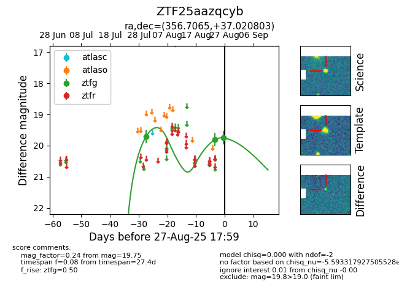

Target ZTF25aazqcyb at 2025-08-27 17:59, see:
FINK: fink-portal.org/ZTF25aazqcyb
Lasair: lasair-ztf.lsst.ac.uk/objects/ZTF25aazqcyb
ALeRCE: alerce.online/object/ZTF25aazqcyb
alt names
ZTF25aazqcyb (ztf,fink)
coordinates:
equatorial (ra, dec) = (356.7065,+37.02080)
galactic (l, b) = (108.8511,-24.07797)
photometry
last ztfg=19.75
3 ztfg detections
